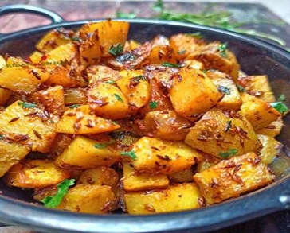

Закуски
Индийский зеленый салат (300г)
Сезонные овощи с легкими пряностями и лимонно-мятной заправкой
400 руб.
Райта (250 мл)
Соус из домашнего йогурта с овощами, зеленью, мягкими специями и мятной приправой
400 руб.
Сабджи Панир (350г)
Пряное рагу с домашним сыром и сезонными овощами
600 руб.
Чикен Тикка с салатом (300г)
Нежная сочная курица на шпажках с золотистой корочкой, замаринованная в пряностях и мёде с имбирём. Подаётся со свежими овощами и соусом
600 руб.
Картофель фри (250г)
Хрустящий картофель в индийском стиле с чаат масала
250 руб.

Алу Зира (300г)
Ароматный картофель, приготовленный с приправами и зирой, сдобренный топлёным маслом гхи
400 руб.
Суп Дал (350мл)
Питательный домашний суп из маша, овощей, приправленный топлёным маслом гхи, дольками лимона и свежим кориандром
500 руб.